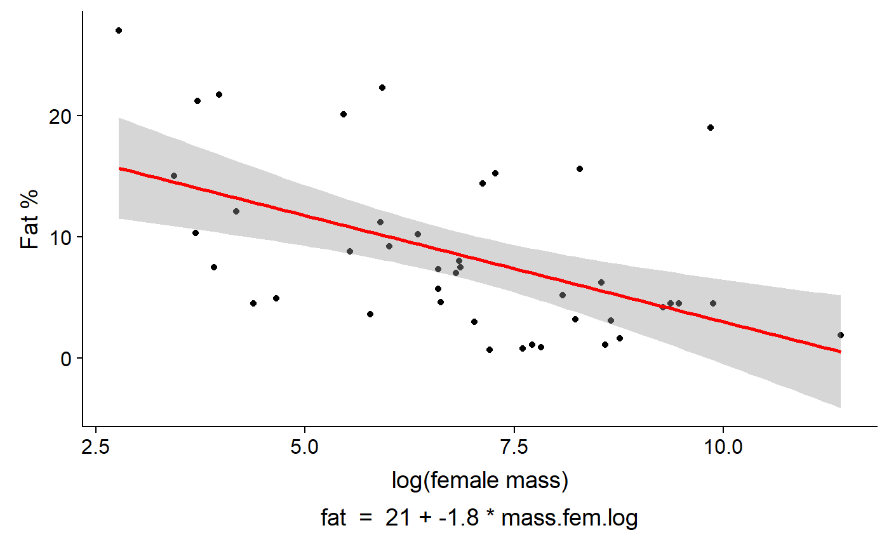

f2) Running and plotting Linear Regression
Nathan Brouwer | brouwern@gmail.com | @lowbrowR
2018-11-27
f2-linear_reg_fit_plot.RmdIntroduction
This walk through introduces how to run a basic linear regression model and plot the output. It demonstrates different ways to plot the output, including
- ggplot
- ggpubr::ggscatter
- The gg_lm_plot() function in the mammalsmilk package
In this tutorial, we will examine the relationship between the fat content of the milk of different species as a function of the mass of the mother. We will focus on primate species and their relatively close relatives (rabbits and rodents - yes, they are our relatives).
Preliminaries
Basic regression in R
Linear regression is done in R with the lm() function, which stands for “linear model”. Most “statistical tests are or can be formulated as linear models; t-tests, ANOVA, ANCOVA, linear regression, and multiple linear regression are all linear models
Some common methods can’t be fit directly as a linear model, like Welch’s t-test, which corrects for unequal variance. However, a very similar approach can be implemented using the function gls() in the nlme package. Standard linear regression is fit using least squares methods, and “gls” stands for “generalized least squares” and makes it possible to relax many of the standard assumptions of classic statistical tests, such as constant variance and independence of residuals.
An extension of the lm() function is glm(), which stands for “general linear model” or “generalized linear model.” Linear models work with numeric data and assumes that residuals are normally distributed. GLMs allow you to work binomial, count, and other forms of data that have non-normal residuals.
Data preparation
The data has been cleaned in previous tutorials. One thing that will make modeling these data is to transform the predictor variable. This is because the mass of animals varies so much.
If we look at the raw data its pretty ugly
ggscatter(data = milk_primates,
y = "fat",
x = "mass.fem")This is because the dataset contains Gorillas, which weigh almost 100,000 grams. The next largest animals is a baboon, then a beaver (humans are absent from the dataset for some reason).
#determine order
i. <- order(milk_primates$mass.fem,
decreasing = T)
#display largest 3 spp
milk_primates$spp[i.][1:3]## [1] Gorilla beringei beringei Papio papio
## [3] Castor fiber
## 42 Levels: Acomys cahirinus Aloutta palliata ... Varecia variegataLog transformation makes things more linear.
#this could be done with dplyr::mutate() too
milk_primates$mass.fem.log <- log(milk_primates$mass.fem)Now check out the plot
ggscatter(data = milk_primates,
y = "fat",
x = "mass.fem.log")Building a regression model
Let’s fit a simple linear regression model. This will have the form we are familiar with from geometry class of
y = m*x + b
Where b is the y intercept and m is the slope.
In stats, we typically change the order
y = b + m*x
Additionally, we call b “Beta 0” and m “Beta 1”
y = B0 + B1*x
To make life hard, R will call B0 “(Intercept)”.
For our particularly situation, we have the model
fat = B0 + B1*mass.fem.log
and we want R to estimate the intercept B0 and the slope B1.
We therefore tell R
fat ~ 1 + mass.fem.log
Where the 1 represents the intercept. In most cases we drop it and just write
fat ~ mass.fem.log
The model is run like this:
lm.mass <- lm(fat ~ mass.fem.log,
data = milk_primates)Model summary
- Look at model output with summary()
- We can also load the broom package and use the tidy() command to get a more compact output
- A function is arm::display
- we can get just the coefficients/slopes with coef()
Standard summary
The standard summary command gives you lots of info
summary(lm.mass)##
## Call:
## lm(formula = fat ~ mass.fem.log, data = milk_primates)
##
## Residuals:
## Min 1Q Median 3Q Max
## -8.339 -4.177 -1.053 1.222 15.743
##
## Coefficients:
## Estimate Std. Error t value Pr(>|t|)
## (Intercept) 20.5150 3.2492 6.314 1.71e-07 ***
## mass.fem.log -1.7517 0.4574 -3.830 0.000443 ***
## ---
## Signif. codes: 0 '***' 0.001 '**' 0.01 '*' 0.05 '.' 0.1 ' ' 1
##
## Residual standard error: 5.961 on 40 degrees of freedom
## Multiple R-squared: 0.2683, Adjusted R-squared: 0.25
## F-statistic: 14.67 on 1 and 40 DF, p-value: 0.0004425The coef() command just gives you the intercept (B0) and the slope (B1), though it doesn’t label them that well.
coef(lm.mass)## (Intercept) mass.fem.log
## 20.514997 -1.751746broom::tidy
A cleaner output can be created with the tidy() function in the broom package:
broom::tidy(lm.mass)## # A tibble: 2 x 5
## term estimate std.error statistic p.value
## <chr> <dbl> <dbl> <dbl> <dbl>
## 1 (Intercept) 20.5 3.25 6.31 0.000000171
## 2 mass.fem.log -1.75 0.457 -3.83 0.000443arm::display
I also like arm::display()
arm::display(lm.mass)## lm(formula = fat ~ mass.fem.log, data = milk_primates)
## coef.est coef.se
## (Intercept) 20.51 3.25
## mass.fem.log -1.75 0.46
## ---
## n = 42, k = 2
## residual sd = 5.96, R-Squared = 0.27Plot model
For simple linear regression with a single predictor variable we can plot things easily using the ggscatter() function from ggpubr with ‘add = “reg.line”’ and ‘conf.int = TRUE’
ggscatter(data = milk_primates,
y = "fat",
x = "mass.fem.log",
add = "reg.line",
conf.int = TRUE)
Similar functionality with more options can be had using basic ggplot.
ggplot(data = milk_primates,
aes(y = fat,
x = mass.fem.log)) +
geom_point() +
geom_smooth(method = lm)The mammalsmilk package also includes a function, gg_lm_plot(), which is fairly compact and adds some annotation. It can show either summary stats
gg_lm_plot(lm.mass,
xlab. = "log(female mass)",
ylab. = "Fat %",
annotate. = "summary")Or the equation for the model
gg_lm_plot(lm.mass,
xlab. = "log(female mass)",
ylab. = "Fat %",
annotate. = "equation")